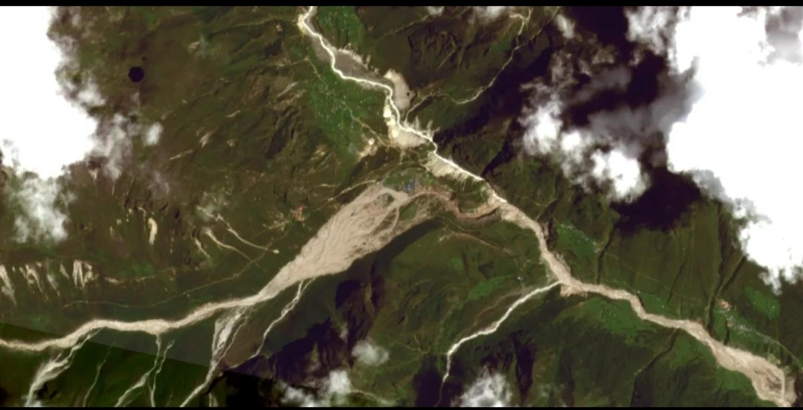

నేపాల్లో భయానక వరదలు.. అసలు కారణం ఇదేనా? హిమనదం కూలిపోవడంతో పెను విపత్తు

నేపాల్-టిబెట్ సరిహద్దు ప్రాంతాన్ని ఆగస్టు 26న భారీ ఫ్లాష్ ఫ్లడ్ వణికించింది. కొద్ది సమయంలోనే కొండ ప్రాంతాల్లోని నదులు ఉగ్రరూపం దాల్చడంతో ఇళ్లు, రహదారులు, వంతెనలు, విద్యుత్ మౌలిక వసతులు తీవ్రంగా దెబ్బతిన్నాయి. వరద నీటితో పాటు భారీగా మట్టి, రాళ్లు, మంచు, ఇతర శిథిలాలు కొట్టుకురావడంతో పరిస్థితి మరింత ప్రమాదకరంగా మారింది. ఈ ఘటనకు సాధారణ భారీ వర్షం మాత్రమే కారణం కాదని నిపుణుల ప్రాథమిక అంచనాలు చెబుతున్నాయి.
అసలు ఈ విపత్తుకు ప్రధాన కారణం ఏమిటంటే.. హిమాలయ ప్రాంతంలో ఒక హిమనదం దిగువ భాగం అకస్మాత్తుగా కూలిపోవడం. హిమనదం నుంచి భారీగా మంచు, రాళ్లు, మట్టి విడిపోయి లోయ వైపు దూసుకెళ్లాయి. ఈ ఐస్-రాక్ అవలాంచ్ నేరుగా ల్హెండే ఖోలా నది ప్రాంతాన్ని ప్రభావితం చేసింది. అక్కడ ఏర్పడిన భారీ debris నదీ ప్రవాహాన్ని ఒక్కసారిగా మార్చడంతో నీరు, మట్టి, రాళ్లు అత్యంత వేగంతో దిగువ ప్రాంతాలకు చేరాయి.
🌊 అసలు వరద ఎలా వచ్చింది?
సాధారణ వరదల్లో వర్షం పడుతూ పడుతూ నదిలో నీటి మట్టం క్రమంగా పెరుగుతుంది. కానీ ఈ ఘటనలో పరిస్థితి పూర్తిగా భిన్నంగా ఉంది. హిమనదం కూలిపోవడంతో మంచు, రాళ్లు, మట్టి భారీ మొత్తంలో నదీ వ్యవస్థలోకి చేరాయి. ఈ debris కొంత ప్రాంతంలో నీటి ప్రవాహాన్ని అడ్డుకోవడంతో తాత్కాలికంగా నీరు నిలిచే పరిస్థితి ఏర్పడింది. ఆ అడ్డంకి ప్రభావం మారిన వెంటనే భారీ మొత్తంలో నీరు ఒక్కసారిగా దిగువకు దూసుకెళ్లింది. అందుకే ఈ ఘటనను సాధారణ వరద కంటే అత్యంత ప్రమాదకరమైన flash floodగా నిపుణులు పేర్కొంటున్నారు.
ప్రాథమిక సమాచారం ప్రకారం ల్హెండే ఖోలా నది ప్రభావం భోటే కోశి నది వ్యవస్థపై కూడా పడింది. కొన్ని ప్రాంతాల్లో నదీ నీటి మట్టం చాలా తక్కువ సమయంలోనే భారీగా పెరిగింది. వేగంగా వచ్చిన నీటితో పాటు సిమెంట్లా కనిపించే మట్టి, పెద్ద రాళ్లు, మంచు ముక్కలు, చెట్ల కొమ్మలు కలిసి ప్రవాహాన్ని మరింత విధ్వంసకరంగా మార్చాయి. కొండ ప్రాంతాల్లో లోయలు ఇరుకుగా ఉండటంతో వరద ప్రవాహానికి వేగం మరింత పెరిగింది.

🏔️ భూకంపమే కారణమా?
వరదకు ముందు ప్రాంతంలో భూకంపం తరహాలో నమోదైన సీస్మిక్ సిగ్నల్పై కూడా చర్చ జరిగింది. అయితే ప్రాథమిక శాస్త్రీయ విశ్లేషణల్లో అది తప్పనిసరిగా ముందుగా వచ్చిన భూకంపమే అని చెప్పలేమని వెల్లడైంది. హిమనదం, రాళ్లు, మంచు భారీగా కదిలిపోవడం వల్లే ఆ తరహా సీస్మిక్ ఎనర్జీ నమోదై ఉండవచ్చని నిపుణులు భావిస్తున్నారు. అందువల్ల ప్రస్తుతం అందుబాటులో ఉన్న సమాచారంతో “భూకంపం వల్లే హిమనదం కూలింది” అని ఖచ్చితంగా చెప్పడం సరైంది కాదు.
🌡️ వాతావరణ మార్పులు కూడా కారణమా?
హిమాలయ ప్రాంతంలో మంచు వేగంగా కరుగుతున్న పరిస్థితులు గత కొంతకాలంగా శాస్త్రవేత్తలను ఆందోళనకు గురిచేస్తున్నాయి. ప్రపంచ ఉష్ణోగ్రతలు పెరగడం వల్ల హిమనదాలు వెనక్కి తగ్గడం, మంచు పొరలు పలుచబడటం, కొండ ప్రాంతాల్లో రాళ్ల స్థిరత్వం తగ్గడం వంటి మార్పులు జరుగుతున్నాయి. ఇవన్నీ కలిసి భవిష్యత్తులో glacier collapse, landslide, avalanche, flash flood వంటి ప్రమాదాలను పెంచే అవకాశం ఉందని నిపుణులు హెచ్చరిస్తున్నారు.
అయితే ఈ ఒక్క ఘటనకు వాతావరణ మార్పులే ప్రత్యక్షంగా కారణమని చెప్పడం ఇంకా తొందరపాటు అవుతుంది. హిమనదం కూలిపోవడానికి స్థానిక భౌగోళిక పరిస్థితులు, మంచు స్థితి, ఉష్ణోగ్రతలు, రాళ్ల స్థిరత్వం వంటి అనేక అంశాలు కలిసి ప్రభావం చూపి ఉండవచ్చు. అందుకే శాస్త్రవేత్తలు ఉపగ్రహ చిత్రాలు, భౌగోళిక డేటా, వాతావరణ వివరాలను పరిశీలిస్తున్నారు.
⚠️ మరో వరద ప్రమాదం ఎందుకు?
మొదటి వరద తర్వాత కూడా ప్రమాదం పూర్తిగా తొలగిపోలేదు. హిమనదం కూలిపోవడం, భారీ debris నదీ మార్గాలను ప్రభావితం చేయడం వల్ల కొన్ని ప్రాంతాల్లో నీరు నిలిచిపోయి కొత్త సరస్సులాంటి నీటి నిల్వలు ఏర్పడ్డాయి. వాటిలో ఒకటి నీరు బయటకు వెళ్లే మార్గం స్పష్టంగా కనిపించకపోవడంతో అధికారులు ప్రత్యేకంగా పర్యవేక్షిస్తున్నారు. నీటి మట్టం మరింత పెరిగి సహజ అడ్డంకి బలహీనపడితే మరోసారి భారీ వరద వచ్చే అవకాశం ఉంటుంది.
అందుకే నేపాల్ అధికారులు నదుల దిగువ ప్రాంతాల్లోని ప్రజలను అప్రమత్తంగా ఉండాలని సూచిస్తున్నారు. ఉపగ్రహ చిత్రాల ద్వారా నీటి నిల్వల పరిమాణం, మార్పులను గమనిస్తున్నారు. అవసరమైతే కెమెరాలు, సెన్సర్లు, హెలికాప్టర్ సర్వేల ద్వారా పరిస్థితిని పరిశీలించే ప్రయత్నాలు జరుగుతున్నాయి. ఇలాంటి ప్రాంతాల్లో చిన్న మార్పు కూడా చాలా వేగంగా పెద్ద ప్రమాదంగా మారే అవకాశం ఉండటంతో ముందస్తు హెచ్చరిక వ్యవస్థలు అత్యంత కీలకంగా మారాయి.
🚨 భారీగా నష్టం.. సహాయక చర్యలు కొనసాగింపు
భారీ వరద కారణంగా అనేక ప్రాంతాల్లో రహదారులు, వంతెనలు, ఇళ్లు, విద్యుత్ వ్యవస్థలు దెబ్బతిన్నాయి. కొండ ప్రాంతాల్లో రవాణా మార్గాలు తెగిపోవడంతో సహాయక బృందాలకు కూడా అనేక ఇబ్బందులు ఎదురయ్యాయి. కొన్ని ప్రాంతాలకు భూభాగం ద్వారా చేరుకోవడం కష్టంగా మారడంతో హెలికాప్టర్ల ద్వారా సహాయక చర్యలు చేపట్టాల్సి వచ్చింది. వరదలో గల్లంతైన వారి కోసం గాలింపు కొనసాగుతోంది. నేపాల్తో పాటు టిబెట్ వైపున కూడా అధికారులు సహాయక చర్యలను వేగవంతం చేస్తున్నారు.
ఈ ఘటన మరోసారి హిమాలయ ప్రాంతాల్లో ముందస్తు హెచ్చరిక వ్యవస్థల అవసరాన్ని గుర్తుచేసింది. హిమనదాల కదలికలను నిరంతరం పర్యవేక్షించడం, ప్రమాదకరమైన సరస్సులను ముందుగానే గుర్తించడం, నదీ ప్రవాహాల్లో అకస్మాత్తుగా వచ్చే మార్పులను గుర్తించే సెన్సర్లు ఏర్పాటు చేయడం చాలా అవసరం. ముఖ్యంగా పర్యాటకులు, యాత్రికులు, నదీ తీర ప్రాంతాల్లో నివసించే ప్రజలకు సమయానికి సమాచారం అందితే ప్రాణనష్టాన్ని గణనీయంగా తగ్గించే అవకాశం ఉంటుంది.
🌍 ప్రపంచానికి హిమాలయాల హెచ్చరిక
నేపాల్లో జరిగిన ఈ ఫ్లాష్ ఫ్లడ్ కేవలం ఒక దేశానికి సంబంధించిన ప్రకృతి విపత్తు మాత్రమే కాదు. హిమాలయాల్లోని మంచు, నదులు, హిమనదాలు భారత్, నేపాల్, భూటాన్, చైనా తదితర దేశాల నీటి వ్యవస్థలతో ముడిపడి ఉన్నాయి. ఒక ప్రాంతంలో హిమనదం కూలిపోవడం లేదా సరస్సు ఒక్కసారిగా పొంగిపోవడం దిగువ ప్రాంతాల్లో తీవ్ర ప్రభావం చూపే అవకాశం ఉంది. అందుకే హిమాలయ ప్రాంతాల్లో వాతావరణం, హిమనదాలు, నదీ ప్రవాహాలను సమన్వయంగా పర్యవేక్షించడం భవిష్యత్తులో మరింత అవసరం.
మొత్తంగా చూస్తే నేపాల్లో ఆగస్టు 26న సంభవించిన భారీ ఫ్లాష్ ఫ్లడ్కు ప్రధాన ట్రిగ్గర్గా హిమనదం కూలిపోవడం, దాని వెంట వచ్చిన మంచు-రాళ్ల అవలాంచ్ మరియు భారీ debris ప్రవాహం కనిపిస్తోంది. ఇది నదీ ప్రవాహాన్ని ఒక్కసారిగా మార్చి దిగువ ప్రాంతాల్లో పెను విధ్వంసానికి దారితీసింది. వాతావరణ మార్పుల ప్రభావం హిమాలయాల్లో ఇటువంటి ప్రమాదాలను పెంచుతున్నదా అనే అంశంపై శాస్త్రవేత్తలు మరింత అధ్యయనం చేస్తున్నారు. ఇదే సమయంలో ఏర్పడిన నీటి నిల్వలపై కూడా అధికారులు నిఘా కొనసాగిస్తున్నారు. పరిస్థితి పూర్తిగా అదుపులోకి వచ్చే వరకు నదీ తీర ప్రాంతాల్లో అప్రమత్తత అత్యంత అవసరం.